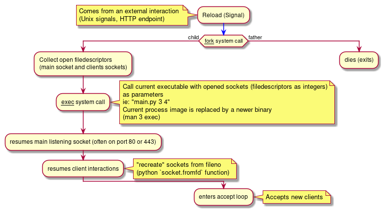

Fork+Exec
Hot Reloading
Any HTTP Server have to setup and bind a socket to any available port. This is basically how any kind of server work. Even in IPv6. Even within a blockchain😂!
At some point, you'll have to restart them. Depending on the task (code deployment, configuration deployment, server update), the process (at OS level) may need to stop and start again. During this process, the main listening socket (usually bound on port 80 or 443 in the simplest configuration) could eventually "disconnect" and let your clients hitting a dry wall, leading to service discontinuation - and often, we (IT people) don't like that very much.
At my previous job, I wondered how uWSGI (which is itself a kind of HTTP Server with tons of features) performs its "hot-reload", without "un-binding" it's main socket. Yep. It does that. Without crashing clients. At all!
Let's be clear - we don't talk about automatic recompilation when the code changes - but delivering consistent HTTP responses for a thousand of motherfuckers per seconds while upgrading business critical software!
Other approach
In modern configurations, we often relies on load-balancers during rolling updates, because a few nodes may eventually be unavailable during the reload operation.
In an other hand, essentially in functionnal languages (but can be also done in Java), you can "update" the runtime while it's running. This is the case with Clojure and Erlang, both respectively relying on the JVM and BEAM. Because of the emphasis on purity (lack of side effects, globals, vars, etc), one can update a function's code without worrying breaking everything down.
But still - that's a lot of constrains. What about a "real" OS Process level hot reloading?
At process (Linux) level
Returning to the uWSGI example from above
When you deploy a new configuration or new code, you basically ask uWSGI to reload and, "magic happens". You'll see uWSGI lying around with a brand new PID, but the listening socket is still there - still listening without interruption.
No high-level trick nor load-balancing are needed - Linux can fucking handle this if your code is smart enough :) You can even restore client's states - which is awesome for long polling connection.
Lazy version
Using SO_REUSEADDR and SO_REUSEPORT, one can bind more than one socket (from one or more processes) on a given couple (IP, PORT).
We can achieve a somewhat "grateful reloading" with these:
main_socket.setsockopt(socket.SOL_SOCKET, socket.SO_REUSEADDR, 1)
main_socket.setsockopt(socket.SOL_SOCKET, socket.SO_REUSEPORT, 1)
and start a parallel, updated process, while asking the oldest and deprecated to stop accepting new clients. But still ... this implies a new socket somewhere. Also, it implies a recent Linux Kernel.
Fork+exec
Explanation:
These are a few prerequisites:
- Sockets should be configured without the flag
SOCK_CLOEXEC. Else, all opened filedescriptors will automatically close atexeccall. - main socket's bind operation should only be done once - after the initial creation. While reloading, this socket is never recreated - but instead duplicated from a fileno passed as argument to the program itself.
fcntl(server_socket, fcntl.F_SETFD, socket.SOCK_CLOEXEC)looks always mandatory, even after a reload. I can't explain this right know.

Commented code (python3):
This example leverage the fork+exec mechanism using Python and its standard library. It stays easy to read (and easier/faster to write than C equivalent)
I kept it very simple - this server can't handle concurrent clients, and that's okay.
#!/bin/env python3
import os
import fcntl
import socket
import signal
import argparse
# fork + exec python server example
server_socket = None
client_sockets = []
def client_processing(sock):
'''
Hello World™ for the socket programming world
'''
while True:
ct = sock.recv(4096)
if b'hello' in ct:
sock.send(b"... world!")
break
sock.close()
def reload_now(*args):
'''
asynchronously called by a signal
(here, SIGUSR1)
'''
pid = os.fork()
if pid == 0:
# child
client_filenos = [str(i.fileno()) for i in client_sockets]
print(f"child: main.py {server_socket.fileno()} {' '.join(client_filenos)}")
os.execvp(__file__, [__file__, str(server_socket.fileno()), *[str(i) for i in client_filenos]])
elif pid != -1:
# parent's exit
# achieve a daemon
print('parent is exiting')
exit(0)
else:
print('os.fork failed :(')
exit(1)
def start(server_fileno, clients_fileno):
'''
Server entry point.
This function can be called in two different ways:
(None, []) -> setup a classic listening socket
(filedescriptor: str, clients_fileno: List[str]) -> "re" bind the listening socket
then continue to serve previously accepted clients
'''
print(f'\n...START\n {server_fileno}, {clients_fileno} ' )
global server_socket
global client_sockets
signal.signal(signal.SIGUSR1, reload_now)
if server_fileno:
# open "inherited" socket
server_socket = socket.fromfd(int(server_fileno), socket.AF_INET, socket.SOCK_STREAM)
# We have to call fcnt again, dunno really why.
# If not, we can only reload once, which is stupid
fcntl.fcntl(server_socket, fcntl.F_SETFD, socket.SOCK_CLOEXEC)
else:
# create socket
server_socket = socket.socket(socket.AF_INET, socket.SOCK_STREAM)
fcntl.fcntl(server_socket, fcntl.F_SETFD, socket.SOCK_CLOEXEC)
# set main socket options
server_socket.setsockopt(socket.SOL_SOCKET, socket.SO_REUSEADDR, 1)
server_socket.setsockopt(socket.SOL_SOCKET, socket.SO_REUSEPORT, 1)
server_socket.bind(('localhost', 8000))
server_socket.listen(10)
# if we came from a reload,
# serve previous before accessing main loop below
# (in real life, these will be delayed to asynchronous tasks or dedicated threads, instead of
# blocking right here - but you get the idea)
if len(clients_fileno):
print('resuming clients...')
for fd in clients_fileno:
s = socket.fromfd(int(fd), socket.AF_INET, socket.SOCK_STREAM)
client_sockets.append(s)
client_processing(s)
client_sockets.remove(s)
# "Accept" loop
# This is our main loop
while True:
(client_socket, (client_addr, client_port)) = server_socket.accept()
# This step is important
# We don't want this client owned socket to close itself after an `exec` system call.
fcntl.fcntl(client_socket, fcntl.F_SETFD, socket.SOCK_CLOEXEC)
print("new client @{}:{}".format(client_addr, client_port))
# We trick using a global here. Also, in real life,
# the "processing" part have to be asynchronous, or delayed
# into some worker processes (or both!).
#
# Here, we handle clients sequentially and individually for the sake of
# clarity and understanding
client_sockets.append(client_socket)
client_processing(client_socket)
client_sockets.remove(client_socket)
print(f"client {client_addr}:{client_port} disconnected")
def main():
'''
'''
print(f'[*] Running\n[*] host: localhost, port: 8000, pid: {os.getpid()}')
print(f'executes `kill -s SIGUSR1 {os.getpid()}` in a shell to trigger a "live-reload"')
print(f'executes `nc localhost 8000` to establish a connection')
print('The server waits for the input "hello", then answers and closes the connection.')
p = argparse.ArgumentParser(prog='Fork+exec python example')
p.add_argument('filedescriptors', nargs='*')
args = p.parse_args()
print(args)
import sys
print(sys.argv)
if len(args.filedescriptors):
# hot reload case
start(args.filedescriptors[0], args.filedescriptors[1:])
else:
start(None, [])
if __name__ == '__main__':
main()